Last updated: 2026-08-07
Checks: 6 1
Knit directory: coderepo-local/
This reproducible R Markdown analysis was created with workflowr (version 1.7.2). The Checks tab describes the reproducibility checks that were applied when the results were created. The Past versions tab lists the development history.
The R Markdown is untracked by Git. To know which version of the R
Markdown file created these results, you’ll want to first commit it to
the Git repo. If you’re still working on the analysis, you can ignore
this warning. When you’re finished, you can run
wflow_publish to commit the R Markdown file and build the
HTML.
Great job! The global environment was empty. Objects defined in the global environment can affect the analysis in your R Markdown file in unknown ways. For reproduciblity it’s best to always run the code in an empty environment.
The command set.seed(20251109) was run prior to running
the code in the R Markdown file. Setting a seed ensures that any results
that rely on randomness, e.g. subsampling or permutations, are
reproducible.
Great job! Recording the operating system, R version, and package versions is critical for reproducibility.
Nice! There were no cached chunks for this analysis, so you can be confident that you successfully produced the results during this run.
Great job! Using relative paths to the files within your workflowr project makes it easier to run your code on other machines.
Great! You are using Git for version control. Tracking code development and connecting the code version to the results is critical for reproducibility.
The results in this page were generated with repository version 9fbd863. See the Past versions tab to see a history of the changes made to the R Markdown and HTML files.
Note that you need to be careful to ensure that all relevant files for
the analysis have been committed to Git prior to generating the results
(you can use wflow_publish or
wflow_git_commit). workflowr only checks the R Markdown
file, but you know if there are other scripts or data files that it
depends on. Below is the status of the Git repository when the results
were generated:
Ignored files:
Ignored: .DS_Store
Ignored: .Rhistory
Ignored: .Rproj.user/
Ignored: analysis/.DS_Store
Ignored: analysis/.Rhistory
Ignored: code/.DS_Store
Ignored: code/.Rhistory
Ignored: data/appendixB/
Ignored: data/dynamic_eQTL_real/
Ignored: data/toy_example/
Ignored: output/dynamic_eQTL_real/
Ignored: output/pdf/
Ignored: output/revision_simulations/
Untracked files:
Untracked: Rplots.pdf
Untracked: analysis/revision_combined_spiky_genotype_simulation.rmd
Untracked: analysis/revision_correlated_error_simulation.rmd
Untracked: analysis/revision_functional_testing_simulation.rmd
Untracked: analysis/revision_genotype_level_simulation.rmd
Untracked: analysis/revision_internal_observational_null_set_pilot.rmd
Untracked: analysis/revision_internal_one_variant_per_gene_refit.rmd
Untracked: analysis/revision_internal_real_genotype_simulation.rmd
Untracked: analysis/revision_internal_targeted_broad_calibration.rmd
Untracked: analysis/revision_internal_zero_intercept_correlation.rmd
Untracked: analysis/revision_ld_tagging_switch_example.rmd
Untracked: code/00_eQTLs_CL.R
Untracked: code/01_fash_CL.R
Untracked: code/01_fash_CL.sbatch
Untracked: code/09_penalty_sensitivity.R
Untracked: code/09_penalty_sensitivity.sbatch
Untracked: code/revision_simulations/
Untracked: fash_prior_comparison_order1_after.pdf
Untracked: fash_prior_comparison_order1_after.png
Untracked: fash_prior_comparison_order1_before.pdf
Untracked: fash_prior_comparison_order1_before.png
Untracked: fash_prior_comparison_order2_after.pdf
Untracked: fash_prior_comparison_order2_after.png
Untracked: fash_prior_comparison_order2_before.pdf
Untracked: fash_prior_comparison_order2_before.png
Unstaged changes:
Modified: .gitignore
Modified: analysis/dynamic_eQTL_real.rmd
Modified: analysis/index.Rmd
Modified: analysis/nonlinear_dynamic_eQTL_real.Rmd
Modified: code/README.md
Modified: output/toy_example/toy_example_11.pdf
Modified: output/toy_example/toy_example_12.pdf
Modified: output/toy_example/toy_example_21.pdf
Modified: output/toy_example/toy_example_22.pdf
Note that any generated files, e.g. HTML, png, CSS, etc., are not included in this status report because it is ok for generated content to have uncommitted changes.
There are no past versions. Publish this analysis with
wflow_publish() to start tracking its development.
For the 200-pair Set A pilot, what do the selected fitted trajectories actually look like, and how different is the empirical covariance after within-unit centering from the pairwise-difference estimate?
Answer. The difference is not slight. The pairwise-difference lag-1 covariance is 0.547, whereas the raw within-unit centered covariance is 0.164. At lag 15 the estimates are 0.169 and -0.114, respectively. Thus within-unit centering removes most of the persistent positive component and produces negative mean covariance at longer lags. The two procedures should not be treated as approximately interchangeable estimates of the same matrix without an explicit centering correction.
This is still an observational null-enrichment exercise. A gene with no FASH dynamic discovery is not known to be a true dynamic null, and the trajectory gallery below is included specifically to audit that concern.
The analysis starts from the complete BF-adjusted FASH(1) fit with 1,009,173 gene-variant pairs from 6,362 genes. Set A excludes every gene with at least one FASH dynamic discovery under the same cumulative-lfdr FDR rule at alpha 0.05 as the real-data analysis.
render_scrollable_table(
selection_table,
align = "llrrrr",
minimum_width = "1120px",
digits = 0L
)| Set | Definition | Eligible genes | Eligible genes with a gene-unique variant | Selected pairs | Candidate pairs |
|---|---|---|---|---|---|
| A: no FASH dynamic discovery | No gene-level BF-adjusted FASH dynamic discovery at cumulative-lfdr FDR 0.05 | 5185 | 3931 | 200 | 436965 |
| B: no dynamic or time-specific discovery | Set A plus no gene-level time-specific eQTL discovery at eFDR 0.05 on any of 16 days | 4569 | 3478 | 200 | 375693 |
For each eligible gene, candidate variants are restricted to variants tested with only that one gene in the complete FASH catalog. A fixed random score then chooses one variant per gene and 200 genes. The score does not use beta estimates, standard errors, lfdr values, p-values, or eFDR values. There are no duplicated genes or variants in Set A.
render_scrollable_table(
discovery_table,
align = "lr",
minimum_width = "720px",
digits = 4L
)| Quantity | Value |
|---|---|
| All tested FASH pairs | 1,009,173 |
| All tested genes | 6,362 |
| FASH dynamic-discovered pairs | 9,205 |
| FASH dynamic-discovered genes | 1,177 |
| Largest selected dynamic lfdr | 0.1475 |
| Genes discovered at one or more individual days | 801 |
The selected pairs were not required to have high individual lfdr values. Their lfdr distribution is shown as a selection audit.
render_scrollable_table(
selection_lfdr_summary,
align = "lrrrrrr",
minimum_width = "920px",
digits = 4L
)| Set | Minimum | First quartile | Median | Mean | Third quartile | Maximum |
|---|---|---|---|---|---|---|
| A: no FASH dynamic discovery | 0.517 | 0.9297 | 0.9407 | 0.9256 | 0.9502 | 0.9985 |
| B: no dynamic or time-specific discovery | 0.517 | 0.9355 | 0.9414 | 0.9266 | 0.9502 | 0.9985 |
The 200 selected units are ranked from highest to lowest BF-adjusted lfdr and split into four equal groups. Each page shows a fixed-random sample of 25 units from one group: page 1 is sampled from ranks 1–50 and page 4 from ranks 151–200. Blue points and lines are fitted \(\widehat\beta_j(t)\) values, grey bars are plus or minus one adjusted SE, and the orange dashed line is the inverse-variance weighted constant fit. Each panel has its own y-axis, so the gallery is intended for shape inspection rather than cross-panel amplitude comparison.
plot_set_a_gallery_page(1L)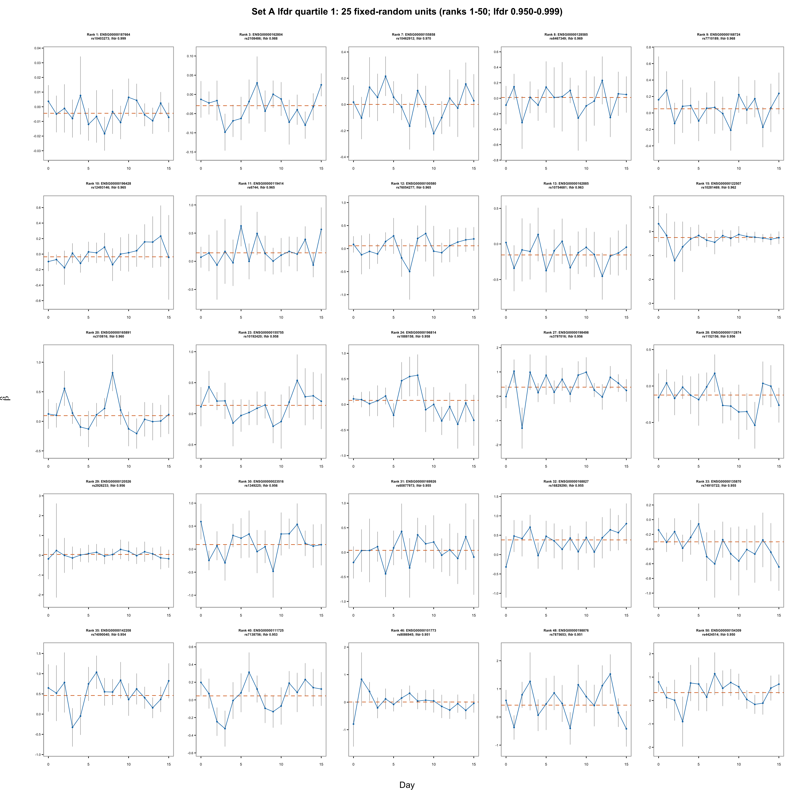
Twenty-five fixed-random Set A units from the highest BF-adjusted-lfdr quartile.
render_scrollable_table(
set_a_gallery_table(1L),
align = "rrllrr",
minimum_width = "960px",
digits = 4L
)| Panel | Set A lfdr rank | Gene | Variant | BF-adjusted lfdr | Weighted constant estimate |
|---|---|---|---|---|---|
| 1 | 1 | ENSG00000187664 | rs10403273 | 0.9985 | -0.0044 |
| 2 | 3 | ENSG00000162804 | rs2108486 | 0.9876 | -0.0294 |
| 3 | 7 | ENSG00000155858 | rs10462912 | 0.9700 | 0.0003 |
| 4 | 8 | ENSG00000128585 | rs6467349 | 0.9688 | 0.0100 |
| 5 | 9 | ENSG00000168724 | rs7710189 | 0.9680 | 0.0505 |
| 6 | 10 | ENSG00000196428 | rs12493146 | 0.9654 | -0.0350 |
| 7 | 11 | ENSG00000119414 | rs6744 | 0.9652 | 0.1501 |
| 8 | 12 | ENSG00000100580 | rs76054277 | 0.9650 | 0.0610 |
| 9 | 13 | ENSG00000162885 | rs10754681 | 0.9631 | -0.1542 |
| 10 | 15 | ENSG00000122507 | rs10281469 | 0.9620 | -0.2498 |
| 11 | 20 | ENSG00000165891 | rs310816 | 0.9601 | 0.0961 |
| 12 | 23 | ENSG00000155755 | rs10192420 | 0.9584 | 0.1345 |
| 13 | 24 | ENSG00000196814 | rs1888158 | 0.9575 | 0.0796 |
| 14 | 27 | ENSG00000198498 | rs3797016 | 0.9563 | 0.3741 |
| 15 | 28 | ENSG00000112874 | rs1152156 | 0.9561 | -0.1238 |
| 16 | 29 | ENSG00000120526 | rs2926233 | 0.9557 | 0.0414 |
| 17 | 30 | ENSG00000023516 | rs1349225 | 0.9555 | 0.1000 |
| 18 | 31 | ENSG00000169926 | rs60877973 | 0.9553 | 0.0404 |
| 19 | 32 | ENSG00000168827 | rs16829290 | 0.9553 | 0.3787 |
| 20 | 33 | ENSG00000135870 | rs74910722 | 0.9553 | -0.3018 |
| 21 | 35 | ENSG00000142208 | rs74090040 | 0.9536 | 0.4602 |
| 22 | 40 | ENSG00000111725 | rs7138756 | 0.9529 | 0.0455 |
| 23 | 46 | ENSG00000101773 | rs8086945 | 0.9512 | 0.0056 |
| 24 | 48 | ENSG00000198876 | rs7875653 | 0.9510 | 0.4213 |
| 25 | 50 | ENSG00000154309 | rs4424514 | 0.9503 | 0.3372 |
plot_set_a_gallery_page(2L)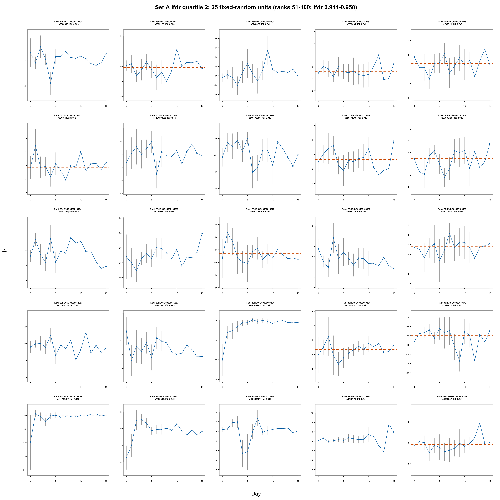
Twenty-five fixed-random Set A units from the second BF-adjusted-lfdr quartile.
render_scrollable_table(
set_a_gallery_table(2L),
align = "rrllrr",
minimum_width = "960px",
digits = 4L
)| Panel | Set A lfdr rank | Gene | Variant | BF-adjusted lfdr | Weighted constant estimate | |
|---|---|---|---|---|---|---|
| 26 | 1 | 51 | ENSG00000113194 | rs2963686 | 0.9502 | 0.0126 |
| 27 | 2 | 53 | ENSG00000022277 | rs6099175 | 0.9502 | -0.0777 |
| 28 | 3 | 56 | ENSG00000196591 | rs7740376 | 0.9491 | 0.0858 |
| 29 | 4 | 57 | ENSG00000250067 | rs2099334 | 0.9489 | -0.3919 |
| 30 | 5 | 62 | ENSG00000100575 | rs1743721 | 0.9469 | -0.5962 |
| 31 | 6 | 63 | ENSG00000250317 | rs6448406 | 0.9466 | 0.8382 |
| 32 | 7 | 65 | ENSG00000125877 | rs113139885 | 0.9461 | -0.9143 |
| 33 | 8 | 68 | ENSG00000023228 | rs10170850 | 0.9458 | -0.3085 |
| 34 | 9 | 70 | ENSG00000113649 | rs56771518 | 0.9454 | 0.6562 |
| 35 | 10 | 72 | ENSG00000101557 | rs77935765 | 0.9450 | -0.5209 |
| 36 | 11 | 73 | ENSG00000189241 | rs9488892 | 0.9450 | -0.0676 |
| 37 | 12 | 75 | ENSG00000130787 | rs897386 | 0.9448 | -0.2468 |
| 38 | 13 | 76 | ENSG00000013573 | rs2287463 | 0.9443 | -0.6445 |
| 39 | 14 | 78 | ENSG00000180190 | rs6989235 | 0.9440 | -0.3394 |
| 40 | 15 | 79 | ENSG00000138668 | rs10213418 | 0.9436 | 0.7904 |
| 41 | 16 | 80 | ENSG00000054983 | rs11851130 | 0.9434 | -0.2786 |
| 42 | 17 | 82 | ENSG00000166557 | rs3901663 | 0.9434 | -0.5079 |
| 43 | 18 | 86 | ENSG00000197461 | rs78522909 | 0.9429 | -0.4703 |
| 44 | 19 | 88 | ENSG00000109861 | rs11019541 | 0.9428 | 0.6943 |
| 45 | 20 | 89 | ENSG00000149177 | rs1228022 | 0.9426 | 0.0029 |
| 46 | 21 | 91 | ENSG00000154096 | rs10736497 | 0.9424 | -0.1004 |
| 47 | 22 | 92 | ENSG00000136813 | rs7036399 | 0.9423 | -0.0310 |
| 48 | 23 | 96 | ENSG00000132824 | rs73909537 | 0.9419 | 1.0954 |
| 49 | 24 | 98 | ENSG00000119280 | rs3748771 | 0.9414 | 0.7139 |
| 50 | 25 | 100 | ENSG00000106799 | rs4563947 | 0.9407 | -0.4073 |
plot_set_a_gallery_page(3L)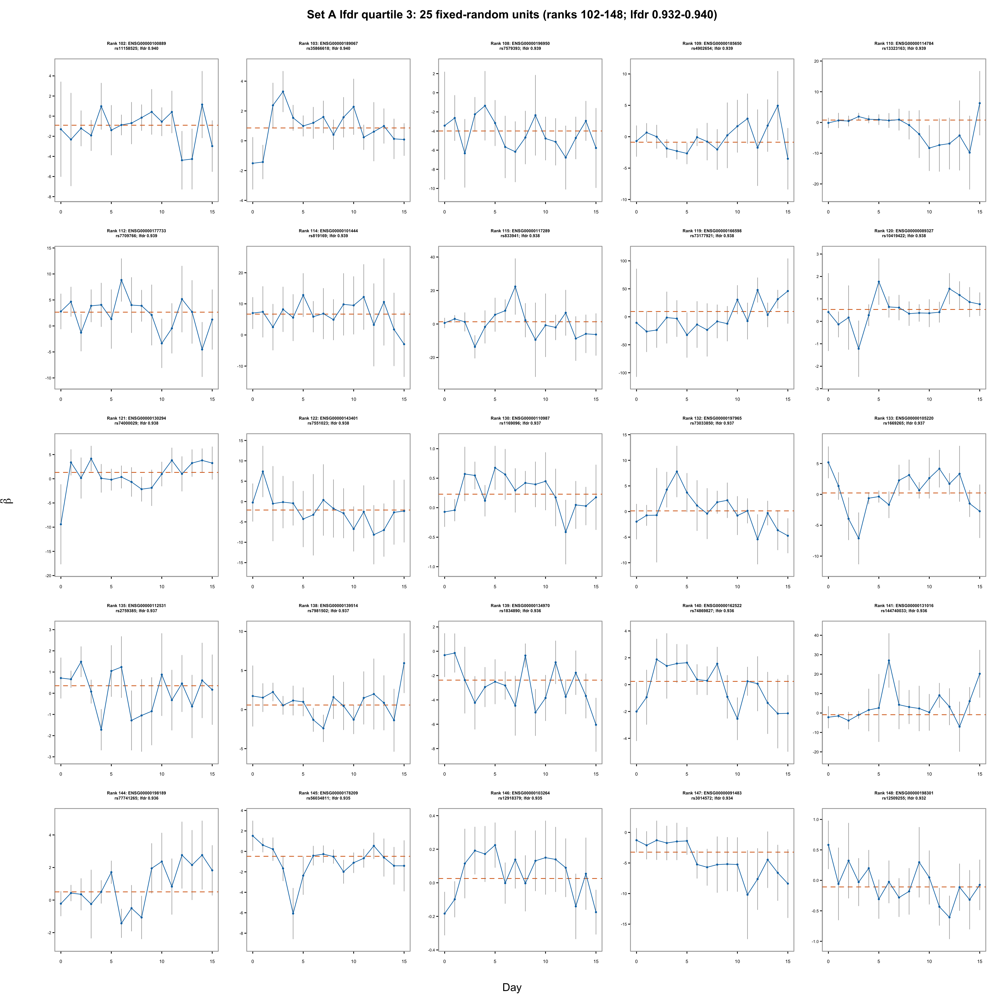
Twenty-five fixed-random Set A units from the third BF-adjusted-lfdr quartile.
render_scrollable_table(
set_a_gallery_table(3L),
align = "rrllrr",
minimum_width = "960px",
digits = 4L
)| Panel | Set A lfdr rank | Gene | Variant | BF-adjusted lfdr | Weighted constant estimate | |
|---|---|---|---|---|---|---|
| 51 | 1 | 102 | ENSG00000100889 | rs11158525 | 0.9404 | -0.9033 |
| 52 | 2 | 103 | ENSG00000189067 | rs35866618 | 0.9403 | 0.8593 |
| 53 | 3 | 108 | ENSG00000196950 | rs7579393 | 0.9392 | -3.9957 |
| 54 | 4 | 109 | ENSG00000185650 | rs4902654 | 0.9389 | -0.8735 |
| 55 | 5 | 110 | ENSG00000114784 | rs13323163 | 0.9387 | 0.7845 |
| 56 | 6 | 112 | ENSG00000177733 | rs7709766 | 0.9385 | 2.6514 |
| 57 | 7 | 114 | ENSG00000101444 | rs819169 | 0.9385 | 6.7019 |
| 58 | 8 | 115 | ENSG00000117289 | rs833941 | 0.9384 | 1.3343 |
| 59 | 9 | 119 | ENSG00000166598 | rs73177921 | 0.9381 | 9.4548 |
| 60 | 10 | 120 | ENSG00000089327 | rs10419422 | 0.9379 | 0.5294 |
| 61 | 11 | 121 | ENSG00000130294 | rs74000029 | 0.9379 | 1.3132 |
| 62 | 12 | 122 | ENSG00000143401 | rs7551023 | 0.9379 | -2.0828 |
| 63 | 13 | 130 | ENSG00000110987 | rs1169096 | 0.9375 | 0.2290 |
| 64 | 14 | 132 | ENSG00000197965 | rs73033850 | 0.9373 | 0.1257 |
| 65 | 15 | 133 | ENSG00000105220 | rs1669265 | 0.9372 | 0.2276 |
| 66 | 16 | 135 | ENSG00000112531 | rs2759385 | 0.9371 | 0.3525 |
| 67 | 17 | 138 | ENSG00000139514 | rs7981502 | 0.9367 | 0.5836 |
| 68 | 18 | 139 | ENSG00000134970 | rs1834890 | 0.9364 | -2.3744 |
| 69 | 19 | 140 | ENSG00000162522 | rs74869827 | 0.9363 | 0.2423 |
| 70 | 20 | 141 | ENSG00000131016 | rs144740033 | 0.9359 | -0.8807 |
| 71 | 21 | 144 | ENSG00000198189 | rs77741265 | 0.9355 | 0.5027 |
| 72 | 22 | 145 | ENSG00000178209 | rs56034811 | 0.9354 | -0.4800 |
| 73 | 23 | 146 | ENSG00000103264 | rs12918379 | 0.9347 | 0.0256 |
| 74 | 24 | 147 | ENSG00000091483 | rs3014572 | 0.9340 | -3.2270 |
| 75 | 25 | 148 | ENSG00000198301 | rs12509255 | 0.9315 | -0.1079 |
plot_set_a_gallery_page(4L)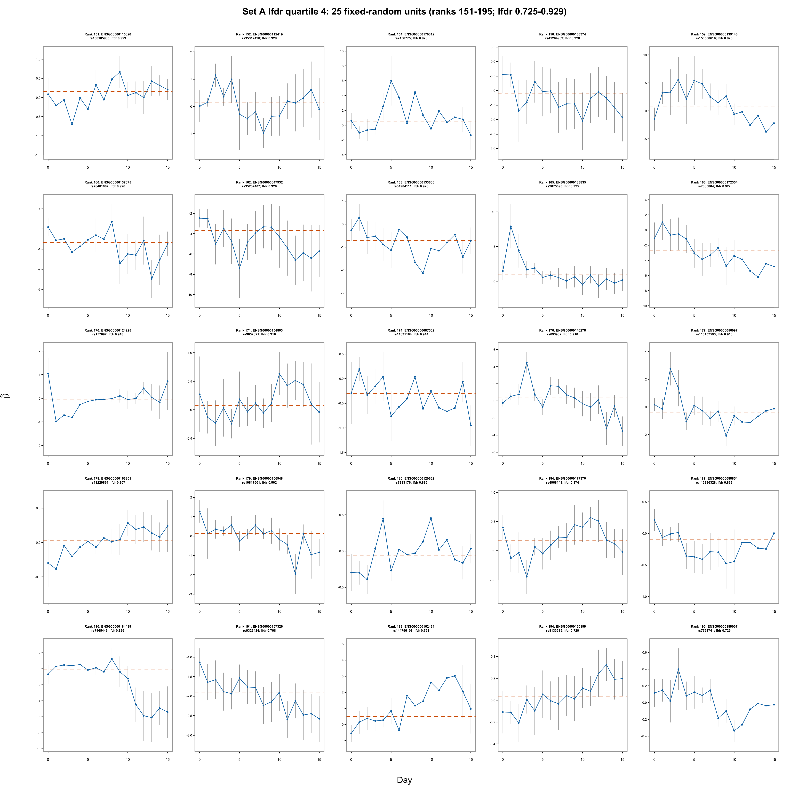
Twenty-five fixed-random Set A units from the lowest BF-adjusted-lfdr quartile.
render_scrollable_table(
set_a_gallery_table(4L),
align = "rrllrr",
minimum_width = "960px",
digits = 4L
)| Panel | Set A lfdr rank | Gene | Variant | BF-adjusted lfdr | Weighted constant estimate | |
|---|---|---|---|---|---|---|
| 76 | 1 | 151 | ENSG00000115020 | rs138105985 | 0.9290 | 0.1534 |
| 77 | 2 | 152 | ENSG00000112419 | rs35317420 | 0.9288 | 0.1586 |
| 78 | 3 | 154 | ENSG00000170312 | rs2456775 | 0.9284 | 0.4357 |
| 79 | 4 | 156 | ENSG00000163374 | rs41264969 | 0.9277 | -1.0864 |
| 80 | 5 | 159 | ENSG00000139146 | rs150550616 | 0.9264 | 0.7000 |
| 81 | 6 | 160 | ENSG00000137075 | rs78401067 | 0.9264 | -0.6685 |
| 82 | 7 | 162 | ENSG00000047932 | rs35237407 | 0.9260 | -3.6698 |
| 83 | 8 | 163 | ENSG00000133606 | rs34984111 | 0.9259 | -0.7105 |
| 84 | 9 | 165 | ENSG00000133835 | rs2075698 | 0.9250 | 0.9052 |
| 85 | 10 | 166 | ENSG00000172354 | rs7385804 | 0.9221 | -2.7480 |
| 86 | 11 | 170 | ENSG00000124225 | rs157092 | 0.9179 | -0.0669 |
| 87 | 12 | 171 | ENSG00000154803 | rs9652821 | 0.9156 | 0.0778 |
| 88 | 13 | 174 | ENSG00000087502 | rs11831164 | 0.9140 | -0.3040 |
| 89 | 14 | 176 | ENSG00000146278 | rs693932 | 0.9103 | 0.3420 |
| 90 | 15 | 177 | ENSG00000056097 | rs113107593 | 0.9096 | -0.4275 |
| 91 | 16 | 178 | ENSG00000166801 | rs11229861 | 0.9075 | 0.0248 |
| 92 | 17 | 179 | ENSG00000106948 | rs10817601 | 0.9017 | 0.1327 |
| 93 | 18 | 180 | ENSG00000120662 | rs7983176 | 0.8961 | -0.0666 |
| 94 | 19 | 184 | ENSG00000177370 | rs4968149 | 0.8736 | 0.1807 |
| 95 | 20 | 187 | ENSG00000088854 | rs112936328 | 0.8632 | -0.1014 |
| 96 | 21 | 190 | ENSG00000184489 | rs7465449 | 0.8262 | -0.1337 |
| 97 | 22 | 191 | ENSG00000157326 | rs9323424 | 0.7983 | -1.8952 |
| 98 | 23 | 193 | ENSG00000162434 | rs144756108 | 0.7505 | 0.4974 |
| 99 | 24 | 194 | ENSG00000160199 | rs8133215 | 0.7292 | 0.0364 |
| 100 | 25 | 195 | ENSG00000189007 | rs7761741 | 0.7253 | -0.0274 |
On visual inspection, the highest-lfdr page contains many trajectories that are compatible with noisy fluctuations relative to their SE bars, but it is not uniformly featureless. The lower-lfdr pages contain several visibly structured, monotone, or endpoint-driven trajectories; some of the most abrupt patterns also have very large SEs. This reinforces the intended interpretation: Set A is null-enriched, not an observed collection of true constant-effect nulls.
Write the fitted time-specific effect estimate as
\[ \widehat\beta_j(t)=\beta_j(t)+s_j(t)\varepsilon_j(t), \qquad \operatorname{Cov}\{\varepsilon_j(t),\varepsilon_j(s)\}=C_{ts}. \]
For Set A, the working dynamic null is \(\beta_j(t)=\mu_j\). With
\[ x_{j,ts}=\frac{2s_{jt}s_{js}}{s_{jt}^2+s_{js}^2}, \qquad q_{j,ts}=\frac{ \{\widehat\beta_j(t)-\widehat\beta_j(s)\}^2 }{s_{jt}^2+s_{js}^2}, \]
the constant \(\mu_j\) cancels and \(E(1-q_{j,ts})=x_{j,ts}C_{ts}\). The pairwise estimate is
\[ \widehat C_{ts}^{\mathrm{pair}} =\frac{\sum_jx_{j,ts}(1-q_{j,ts})}{\sum_jx_{j,ts}^2}, \qquad \widehat C_{tt}^{\mathrm{pair}}=1. \]
The within-unit method first estimates and removes a weighted constant,
\[ \widehat\mu_j= \frac{\sum_t\widehat\beta_j(t)/s_j^2(t)} {\sum_t1/s_j^2(t)}, \qquad r_j(t)=\frac{\widehat\beta_j(t)-\widehat\mu_j}{s_j(t)}, \]
and then computes the raw empirical second-moment matrix
\[ \widehat C^{\mathrm{center}} =\frac{1}{M}\sum_{j=1}^M r_jr_j^T. \]
This second matrix is intentionally not rescaled to unit diagonal. The correlation matrix of the columns of \(r\) is also shown separately, but it is not called a covariance estimate.
The centering transformation changes the estimand. If \(D_j=\operatorname{diag}\{s_j(t)\}\) and \(w_j\) is the normalized inverse-variance weight vector, then under a constant true effect
\[ r_j=A_j\varepsilon_j, \qquad A_j=D_j^{-1}(I-\mathbf 1w_j^T)D_j, \]
so \(E(r_jr_j^T)=A_j C A_j^T\), not \(C\). This operation can remove a common residual mode as well as the unknown intercept. The discrepancy therefore need not equal a small universal negative offset.
All matrices below are raw. No nearest-positive-definite projection was applied.
plot_set_a_matrix_comparison()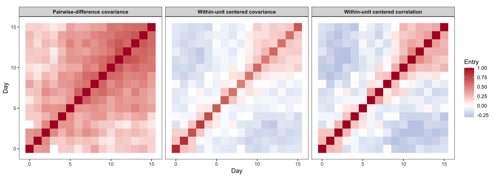
Set A raw matrix estimates. Pairwise covariance has a fixed unit diagonal; centered covariance retains its empirical diagonal; centered correlation rescales that same centered residual matrix to unit diagonal.
Both covariance matrices happen to be positive definite in this pilot, although positive definiteness was not imposed.
render_scrollable_table(
set_a_centered_diagnostic_table,
align = "llrrrrrrrr",
minimum_width = "1220px",
digits = 4L
)| Set | Estimator | Minimum eigenvalue | Maximum eigenvalue | Negative eigenvalues | Minimum diagonal | Maximum diagonal | Mean off-diagonal | Minimum off-diagonal | Maximum off-diagonal |
|---|---|---|---|---|---|---|---|---|---|
| A: no FASH dynamic discovery | Pairwise difference | 0.1879 | 6.6036 | 0 | 1.000 | 1.0000 | 0.3549 | -0.0056 | 0.7136 |
| A: no FASH dynamic discovery | Within-unit centered covariance | 0.1814 | 2.2265 | 0 | 0.512 | 0.8848 | -0.0272 | -0.2612 | 0.2572 |
The off-diagonal patterns are ordered similarly, but their levels differ substantially: their entrywise Pearson correlation is 0.863, while the mean centered-minus-pairwise difference is -0.382.
plot_set_a_covariance_entry_agreement()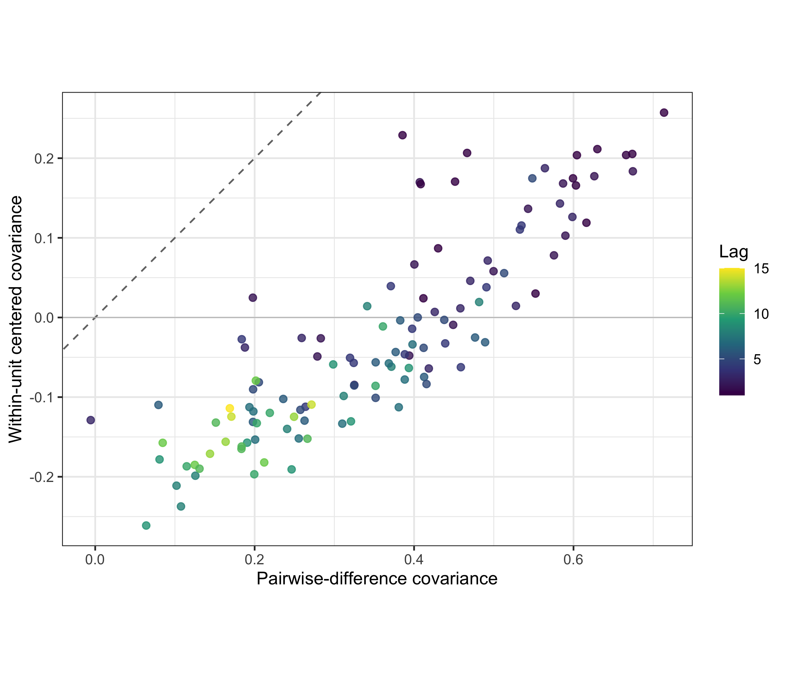
Off-diagonal Set A covariance entries. Color denotes time lag; the dashed line is equality.
render_scrollable_table(
set_a_method_agreement,
align = "lr",
minimum_width = "760px",
digits = 4L
)| Quantity | Value |
|---|---|
| Off-diagonal Pearson correlation | 0.8631 |
| Mean centered-minus-pairwise difference | -0.3821 |
| Off-diagonal mean absolute difference | 0.3821 |
| Off-diagonal root mean squared difference | 0.3911 |
| Off-diagonal maximum absolute difference | 0.5223 |
| Maximum absolute lag-averaged covariance difference | 0.4049 |
For either raw covariance matrix, the lag-\(h\) semivariogram is
\[ \widehat\gamma(h) =\frac{1}{16-h}\sum_{t=0}^{15-h} \frac{\widehat C_{tt}+\widehat C_{t+h,t+h} -2\widehat C_{t,t+h}}{2}. \]
The shaded bands are percentile 95% intervals from the same 200 gene-level bootstrap resamples for both estimators.
plot_set_a_covariance_comparison()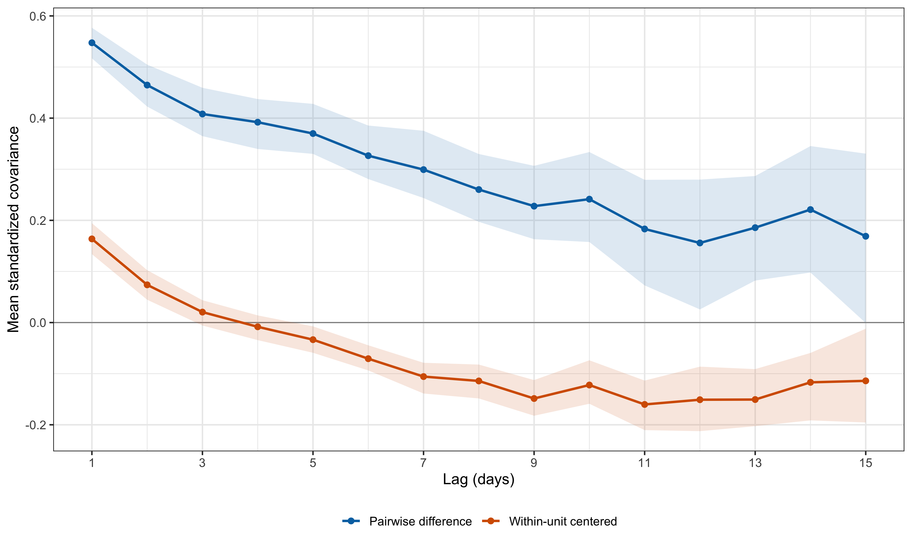
Set A lag-averaged standardized covariance with paired gene-bootstrap 95% intervals.
plot_set_a_variogram_comparison()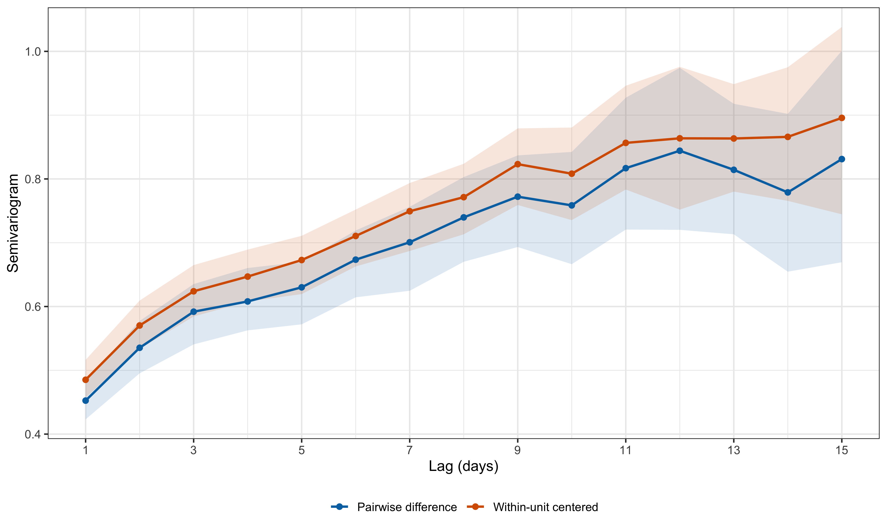
Set A semivariograms with paired gene-bootstrap 95% intervals. The centered variogram uses the empirical centered diagonal rather than one minus centered covariance.
The variograms look closer than the covariance curves because the centered matrix also has a smaller diagonal: its mean diagonal is 0.657, rather than one. The centered variogram therefore combines a lower diagonal with lower off-diagonal covariance; it is not \(1\) minus the orange covariance curve.
render_scrollable_table(
set_a_key_lag_table,
align = "lrrrrrrrr",
minimum_width = "1160px",
digits = 4L
)| Estimator | Lag | Covariance | Covariance 2.5% | Covariance 97.5% | Semivariogram | Semivariogram 2.5% | Semivariogram 97.5% | |
|---|---|---|---|---|---|---|---|---|
| 1 | Pairwise difference | 1 | 0.5475 | 0.5170 | 0.5769 | 0.4525 | 0.4231 | 0.4830 |
| 5 | Pairwise difference | 5 | 0.3699 | 0.3300 | 0.4279 | 0.6301 | 0.5721 | 0.6700 |
| 10 | Pairwise difference | 10 | 0.2414 | 0.1576 | 0.3336 | 0.7586 | 0.6664 | 0.8424 |
| 15 | Pairwise difference | 15 | 0.1689 | -0.0009 | 0.3305 | 0.8311 | 0.6695 | 1.0009 |
| 16 | Within-unit centered covariance | 1 | 0.1637 | 0.1338 | 0.1945 | 0.4852 | 0.4574 | 0.5164 |
| 20 | Within-unit centered covariance | 5 | -0.0335 | -0.0591 | -0.0074 | 0.6729 | 0.6195 | 0.7109 |
| 25 | Within-unit centered covariance | 10 | -0.1222 | -0.1589 | -0.0738 | 0.8082 | 0.7355 | 0.8806 |
| 30 | Within-unit centered covariance | 15 | -0.1140 | -0.1955 | -0.0120 | 0.8957 | 0.7446 | 1.0382 |
For reference only, rescaling the centered residual columns to unit variance gives the following lag-averaged correlations. This rescaling does not undo the centering projection.
render_scrollable_table(
set_a_centered_correlation_table,
align = "rrr",
minimum_width = "720px",
digits = 4L
)| Lag | Centered correlation | Correlation-scale semivariogram |
|---|---|---|
| 1 | 0.2569 | 0.7431 |
| 5 | -0.0508 | 1.0508 |
| 10 | -0.1791 | 1.1791 |
| 15 | -0.1470 | 1.1470 |
plot_standardized_covariance_heatmaps()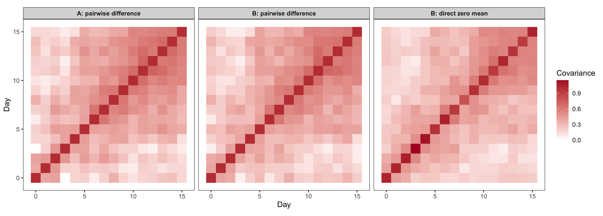
Earlier pilot context: Set A pairwise and legacy non-harmonized Set B estimates.
plot_variograms()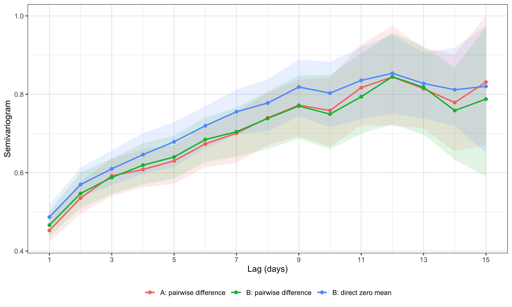
Earlier pilot lag semivariograms. Set B remains visible only as legacy non-harmonized context.
plot_lag_covariances()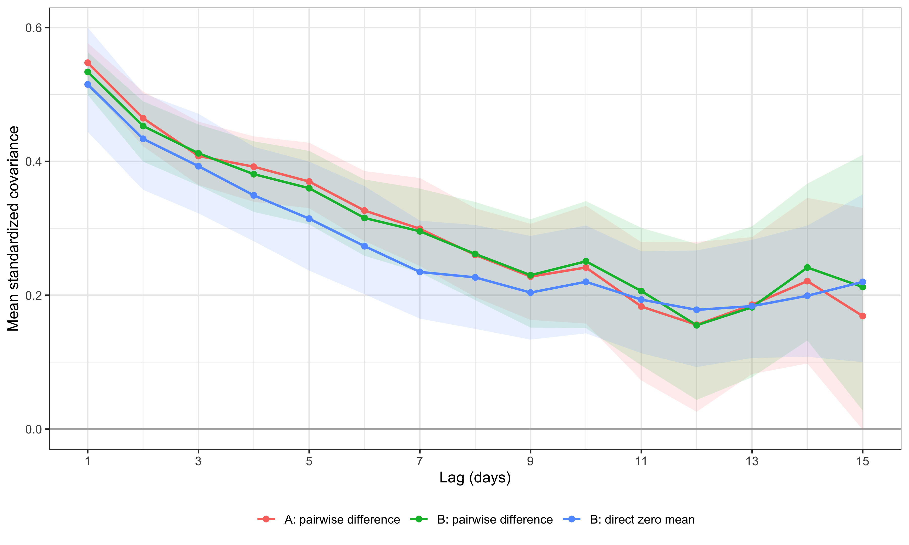
Earlier pilot lag-averaged standardized covariance.
plot_set_b_estimator_agreement()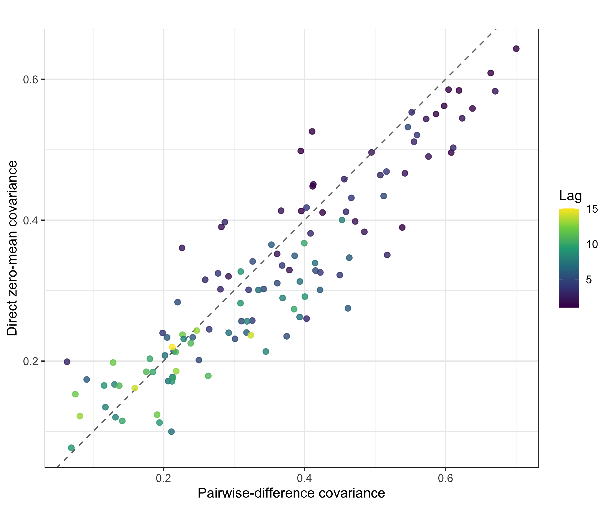
Earlier Set B direct-versus-pairwise comparison; not interpreted as harmonized evidence.
The gallery is an audit of the selected observations, not a proof that Set A contains only true dynamic nulls. Nondiscovery can include weak or underpowered dynamic effects.
Within-unit centering does not merely introduce a small generic negative correlation. It applies a unit-specific projection because the adjusted SEs differ across time and units. In these data, that projection removes most of the persistent positive component estimated by pairwise differences.
The two covariance profiles are therefore evidence about estimator sensitivity, not two nearly identical confirmations of one residual matrix. The pairwise result could reflect genuine residual covariance, violations of the constant-effect null among selected units, or both.
This remains a 200-pair internal pilot. No result on this page has been moved into R4, the manuscript, or the response letter.
Rscript --vanilla \
code/revision_simulations/internal/covariance_estimation/run_observational_null_set_pilot.R \
--pilot-size 200 \
--bootstrap-reps 200 \
--selection-seed 20260806 \
--bootstrap-seed 20260816 \
--output-id observational_null_set_pilotRscript --vanilla \
code/revision_simulations/internal/covariance_estimation/test_observational_null_set_helpers.RRscript --vanilla -e \
'workflowr::wflow_build("analysis/revision_internal_observational_null_set_pilot.rmd")'
sessionInfo()R version 4.5.1 (2025-06-13)
Platform: aarch64-apple-darwin20
Running under: macOS Sequoia 15.6.1
Matrix products: default
BLAS: /System/Library/Frameworks/Accelerate.framework/Versions/A/Frameworks/vecLib.framework/Versions/A/libBLAS.dylib
LAPACK: /Library/Frameworks/R.framework/Versions/4.5-arm64/Resources/lib/libRlapack.dylib; LAPACK version 3.12.1
locale:
[1] C.UTF-8/C.UTF-8/C.UTF-8/C/C.UTF-8/C.UTF-8
time zone: America/Chicago
tzcode source: internal
attached base packages:
[1] stats graphics grDevices utils datasets methods base
other attached packages:
[1] workflowr_1.7.2
loaded via a namespace (and not attached):
[1] gtable_0.3.6 jsonlite_2.0.0 dplyr_1.1.4 compiler_4.5.1
[5] promises_1.5.0 tidyselect_1.2.1 Rcpp_1.1.1-1.1 stringr_1.6.0
[9] git2r_0.36.2 dichromat_2.0-0.1 callr_3.7.6 later_1.4.4
[13] jquerylib_0.1.4 scales_1.4.0 yaml_2.3.12 fastmap_1.2.0
[17] ggplot2_4.0.1 R6_2.6.1 labeling_0.4.3 generics_0.1.4
[21] knitr_1.50 tibble_3.3.0 rprojroot_2.1.1 RColorBrewer_1.1-3
[25] bslib_0.9.0 pillar_1.11.1 rlang_1.2.0 cachem_1.1.0
[29] stringi_1.8.7 httpuv_1.6.16 xfun_0.55 S7_0.2.1
[33] getPass_0.2-4 fs_1.6.6 sass_0.4.10 otel_0.2.0
[37] viridisLite_0.4.2 cli_3.6.6 withr_3.0.2 magrittr_2.0.5
[41] ps_1.9.1 grid_4.5.1 digest_0.6.39 processx_3.8.6
[45] rstudioapi_0.17.1 lifecycle_1.0.5 vctrs_0.7.3 evaluate_1.0.5
[49] glue_1.8.1 farver_2.1.2 whisker_0.4.1 rmarkdown_2.30
[53] httr_1.4.7 tools_4.5.1 pkgconfig_2.0.3 htmltools_0.5.9